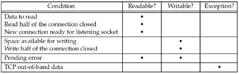

| [ Team LiB ] |
|
6.3 select FunctionThis function allows the process to instruct the kernel to wait for any one of multiple events to occur and to wake up the process only when one or more of these events occurs or when a specified amount of time has passed. As an example, we can call select and tell the kernel to return only when:
That is, we tell the kernel what descriptors we are interested in (for reading, writing, or an exception condition) and how long to wait. The descriptors in which we are interested are not restricted to sockets; any descriptor can be tested using select.
We start our description of this function with its final argument, which tells the kernel how long to wait for one of the specified descriptors to become ready. A timeval structure specifies the number of seconds and microseconds.
struct timeval {
long tv_sec; /* seconds */
long tv_usec; /* microseconds */
};
There are three possibilities:
The wait in the first two scenarios is normally interrupted if the process catches a signal and returns from the signal handler.
Although the timeval structure lets us specify a resolution in microseconds, the actual resolution supported by the kernel is often more coarse. For example, many Unix kernels round the timeout value up to a multiple of 10 ms. There is also a scheduling latency involved, meaning it takes some time after the timer expires before the kernel schedules this process to run.
The const qualifier on the timeout argument means it is not modified by select on return. For example, if we specify a time limit of 10 seconds, and select returns before the timer expires with one or more of the descriptors ready or with an error of EINTR, the timeval structure is not updated with the number of seconds remaining when the function returns. If we wish to know this value, we must obtain the system time before calling select, and then again when it returns, and subtract the two (any robust program will take into account that the system time may be adjusted by either the administrator or by a daemon like ntpd occasionally).
The three middle arguments, readset, writeset, and exceptset, specify the descriptors that we want the kernel to test for reading, writing, and exception conditions. There are only two exception conditions currently supported:
A design problem is how to specify one or more descriptor values for each of these three arguments. select uses descriptor sets, typically an array of integers, with each bit in each integer corresponding to a descriptor. For example, using 32-bit integers, the first element of the array corresponds to descriptors 0 through 31, the second element of the array corresponds to descriptors 32 through 63, and so on. All the implementation details are irrelevant to the application and are hidden in the fd_set datatype and the following four macros:
We allocate a descriptor set of the fd_set datatype, we set and test the bits in the set using these macros, and we can also assign it to another descriptor set across an equals sign (=) in C.
For example, to define a variable of type fd_set and then turn on the bits for descriptors 1, 4, and 5, we write fd_set rset; FD_ZERO(&rset); /* initialize the set: all bits off */ FD_SET(1, &rset); /* turn on bit for fd 1 */ FD_SET(4, &rset); /* turn on bit for fd 4 */ FD_SET(5, &rset); /* turn on bit for fd 5 */ It is important to initialize the set, since unpredictable results can occur if the set is allocated as an automatic variable and not initialized. Any of the middle three arguments to select, readset, writeset, or exceptset, can be specified as a null pointer if we are not interested in that condition. Indeed, if all three pointers are null, then we have a higher precision timer than the normal Unix sleep function (which sleeps for multiples of a second). The poll function provides similar functionality. Figures C.9 and C.10 of APUE show a sleep_us function implemented using both select and poll that sleeps for multiples of a microsecond. The maxfdp1 argument specifies the number of descriptors to be tested. Its value is the maximum descriptor to be tested plus one (hence our name of maxfdp1). The descriptors 0, 1, 2, up through and including maxfdp1–1 are tested. The constant FD_SETSIZE, defined by including <sys/select.h>, is the number of descriptors in the fd_set datatype. Its value is often 1024, but few programs use that many descriptors. The maxfdp1 argument forces us to calculate the largest descriptor that we are interested in and then tell the kernel this value. For example, given the previous code that turns on the indicators for descriptors 1, 4, and 5, the maxfdp1 value is 6. The reason it is 6 and not 5 is that we are specifying the number of descriptors, not the largest value, and descriptors start at 0.
select modifies the descriptor sets pointed to by the readset, writeset, and exceptset pointers. These three arguments are value-result arguments. When we call the function, we specify the values of the descriptors that we are interested in, and on return, the result indicates which descriptors are ready. We use the FD_ISSET macro on return to test a specific descriptor in an fd_set structure. Any descriptor that is not ready on return will have its corresponding bit cleared in the descriptor set. To handle this, we turn on all the bits in which we are interested in all the descriptor sets each time we call select.
The return value from this function indicates the total number of bits that are ready across all the descriptor sets. If the timer value expires before any of the descriptors are ready, a value of 0 is returned. A return value of –1 indicates an error (which can happen, for example, if the function is interrupted by a caught signal).
Under What Conditions Is a Descriptor Ready?We have been talking about waiting for a descriptor to become ready for I/O (reading or writing) or to have an exception condition pending on it (out-of-band data). While readability and writability are obvious for descriptors such as regular files, we must be more specific about the conditions that cause select to return "ready" for sockets (Figure 16.52 of TCPv2).
Notice that when an error occurs on a socket, it is marked as both readable and writable by select. The purpose of the receive and send low-water marks is to give the application control over how much data must be available for reading or how much space must be available for writing before select returns a readable or writable status. For example, if we know that our application has nothing productive to do unless at least 64 bytes of data are present, we can set the receive low-water mark to 64 to prevent select from waking us up if less than 64 bytes are ready for reading. As long as the send low-water mark for a UDP socket is less than the send buffer size (which should always be the default relationship), the UDP socket is always writable, since a connection is not required. Figure 6.7 summarizes the conditions just described that cause a socket to be ready for select. Figure 6.7. Summary of conditions that cause a socket to be ready for select. Maximum Number of Descriptors for selectWe said earlier that most applications do not use lots of descriptors. It is rare, for example, to find an application that uses hundreds of descriptors. But, such applications do exist, and they often use select to multiplex the descriptors. When select was originally designed, the OS normally had an upper limit on the maximum number of descriptors per process (the 4.2BSD limit was 31), and select just used this same limit. But, current versions of Unix allow for a virtually unlimited number of descriptors per process (often limited only by the amount of memory and any administrative limits), so the question is: How does this affect select? Many implementations have declarations similar to the following, which are taken from the 4.4BSD <sys/types.h> header: /* * Select uses bitmasks of file descriptors in longs. These macros * manipulate such bit fields (the filesystem macros use chars). * FD_SETSIZE may be defined by the user, but the default here should * be enough for most uses. */ #ifndef FD_SETSIZE #define FD_SETSIZE 256 #endif This makes us think that we can just #define FD_SETSIZE to some larger value before including this header to increase the size of the descriptor sets used by select. Unfortunately, this normally does not work.
Some vendors are changing their implementation of select to allow the process to define FD_SETSIZE to a larger value than the default. BSD/OS has changed the kernel implementation to allow larger descriptor sets, and it also provides four new FD_xxx macros to dynamically allocate and manipulate these larger sets. From a portability standpoint, however, beware of using large descriptor sets. |
| [ Team LiB ] |
|